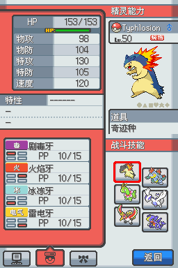
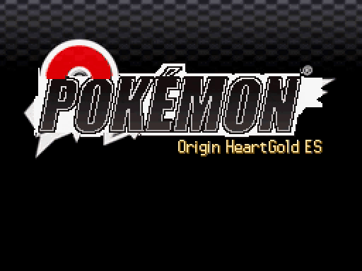
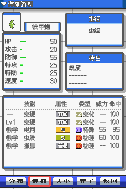
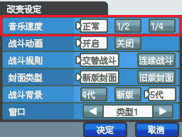
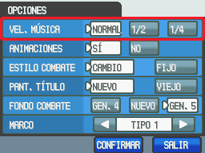
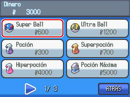
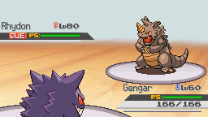

Ni una pantalla en chino
La misma partida y los mismos botones, en el original y en español. Estadísticas, movimientos, objetos y estados: todo se lee.



Un hack de Pokémon HeartGold, completo en español, con 600+ ataques rehechos, combates que se mueven, IA avanzada y Entrenadores que te hablan.
Versión 1.0.0-rc60
Esta traducción al español no es oficial. Si quieres el juego oficial, búscalo en la comunidad de la versión china: Foro de Origin HeartGold en Tieba (起源心金吧) y Grupo QQ 1055021987. Para las versiones en inglés y en español, únete al Discord.
Necesitas tu propia copia de HeartGold (USA), sin parches.
Proyecto de fans, gratis y sin fines de lucro. No afiliado a Nintendo, Game Freak, Creatures ni The Pokémon Company. No incluye ROMs.
Traducción
Español latinoamericano de principio a fin: diálogos, menús, Pokédex, combates y gráficos, con los nombres oficiales.
La misma partida y los mismos botones, en el original y en español. Estadísticas, movimientos, objetos y estados: todo se lee.

Datos, evolución y movimientos de cada Pokémon, con los nombres que ya conoces.


Diálogos, tarjeta, Pokédex, Mochila, mapa, tiendas y PC, capturados del juego con la historia incluida. Aquí sí hay spoilers. Cualquier imagen se abre más grande.


Lo que era imagen en chino se lee en español: Sí y No, tipos, estados, Pokégear y más.

Pokémon, movimientos, objetos, lugares y términos, como los conoces.

En combate lees PAR, CON, DOR, ENV y QUE.
Animaciones
Aquí van solo cinco, cada uno junto a su versión original: cuanto más fuerte es el ataque, más se nota.
El suelo se abre de lado a lado y el polvo se traga la pantalla.
Primero se carga el aire. Luego cae, y explota.
Una ola de verdad cruza la pantalla, y después llueve agua.
Un chorro de fuego continuo que cruza toda la pantalla.
El cielo anuncia lo que viene, y luego empieza a caer fuego.
Una descarga se abre paso hasta el rival y lo envuelve en chispas.
Efectos de combate
La cámara actúa, cada golpe deja marca y los Pokémon reaccionan en los momentos clave.
Cuando alguien ataca, la vista se le acerca y se queda con él hasta que termina el golpe. Los combates de Pokémon nunca se habían visto así.
Cuando un golpe decide el combate, salta una escena corta para que lo disfrutes. Hay tres distintas, y no siempre sale la misma.
Cada golpe que recibe deja marca, y se nota qué lo golpeó y de qué está hecho: no se marca igual la carne que la roca, el metal o una planta. Al curarlo, las marcas se van.
Se acerca cuando entra el as del rival, y contra jefes va de uno al otro.
Se voltea hacia ti cuando ganas, cuando sube de nivel y cuando aguanta con 1 PS.
El golpe que deja sin equipo a un Entrenador importante se ve despacio, para disfrutarlo.
Un K.O. de un solo golpe tiene su momento, y si es tuyo, tu Pokémon lo celebra.
Los Pokémon de Entrenadores vuelven a su Poké Ball al debilitarse, y los salvajes caen.
Están vivos aunque no hagas nada, y los grandes se mueven y caen con todo su peso.
Dormido o confundido, se nota en sus gestos; quemado o envenenado, en su color.
Si sube mucho sus estadísticas, si Drenadoras le quita PS o si ganas, lo ves.
Críticos y remates sacuden la pantalla, y quien esquiva da un paso al lado.
Clima y campos
Lo que pasa en el campo de batalla se queda a la vista, en el suelo y en los propios Pokémon.
La lluvia, la nieve, el sol y la arena se ven entre los Pokémon, no como un filtro encima de la pantalla.
La lluvia los empapa, la nieve los escarcha, el sol los calienta y la arena se les pega.
Campo Eléctrico, de Hierba, de Niebla y Psíquico se ven en todo el escenario mientras duran.
Cada campo envuelve a quien está encima, y así ves de un vistazo a quién le afecta y a quién no.
Las trampas aparecen en el campo de batalla cuando alguien las pone, y ahí se quedan: antes de cambiar, ya sabes qué te espera.
Las pantallas protectoras y salas como Espacio Raro se levantan a la vista de todos.
El fuego, el agua, el hielo y la tierra fuertes dejan su huella en el campo de batalla.
El combate marca al Pokémon al que el clima o el campo le ayuda de verdad.
Un Pokémon del mismo tipo que el campo se ve un poco distinto.
La arena, el veneno, las quemaduras y las maldiciones se ven al quitarle PS.
El polvo de los golpes depende de dónde se pelea.
En las rutas el clima cambia con la fecha, y llega al combate.
Intimidación y las habilidades de clima entran con más espectáculo.
Interfaz
Cajas nuevas, más claras, y más información a la mano.
Un diseño nuevo que tapa menos el combate y hace que los números se lean mejor.
Las cajas se quitan de en medio durante el ataque para que lo veas completo, y la barra roja late cuando te quedan pocos PS.
La barra deja un rastro cuando baja: ves de un vistazo cuánto te acaban de quitar.
En los diálogos, el nombre de quien habla se distingue del resto, y el tuyo también.
El menú principal te dice qué versión de la traducción tienes.
Calidad de vida
Lo que notas cada minuto que juegas.
Una página entera de diálogo aparece de una vez. ¿Prefieres letra por letra? Es un ajuste, y lo cambias cuando quieras.
Doble, como en el original, o normal. Se cambia en cualquier PC y se guarda.

Los diálogos te llaman por tu nombre en casi cien mensajes donde había un hueco.
En las tiendas ves el nombre del movimiento de cada MT, no solo su número.
USAR en una Poké Ball de la Mochila mete en ella a un Pokémon de tu equipo.
La página DATOS te dice de dónde viene un Pokémon, en qué evoluciona y cómo.
SELECT o Y en Opciones: tus medallas, tu límite de nivel y el siguiente, y tus ajustes.
Novedades
Cosas que casi ningún juego de Pokémon te da.
La última página de INFO cuenta todo lo que pasó, turno a turno, en líneas cortas. ¿Qué usó el rival? ¿Cuánto hizo ese golpe? Recórrelo hacia arriba y hacia abajo cuando quieras, en pleno combate.
En todo combate contra Entrenadores, la pantalla táctil muestra tus Poké Balls y las del rival. Sabes cuántos Pokémon le quedan y cómo están, sin adivinar.
En cualquier PC: modo difícil, límite de nivel, IA, velocidad, efectos, daño visible, texto y jefes. Cada línea se explica abajo, y lo cambias cuando quieras. Si un ajuste no se aplica todavía, sale en gris y te dice qué falta.
El Pokémon que te sigue tiene el tamaño que debe: uno de más de 2 m te sigue más grande, y uno de más de 9 m, como Steelix, se nota de verdad.
Algunos rivales importantes pueden megaevolucionar a su Pokémon en pleno combate, y tu plan se va por la ventana. Solo pasa con el ajuste Jefes reforzados encendido.
IA avanzada
Conocen tu equipo, se adelantan a tu jugada y cambian de Pokémon cuando les conviene.
Conocen tu equipo y planean cada turno, como lo haría una persona.
Miran tu primer Pokémon y sacan el suyo en consecuencia. El combate empieza a pensarse desde el primer turno.
Leen lo que vas a hacer antes de que lo hagas, y más si siempre haces lo mismo. Cambia de plan o te van a castigar.
Eligen su mejor ataque, rematan con prioridad y no atacan a quien es inmune.
En vez de quedarse a morir, cambian de Pokémon si les sale a cuenta.
En pleno combate, los Entrenadores reaccionan a lo que pasa y lo comentan: un golpe que los sorprende, un combate cerrado, su mejor Pokémon que entra o que cae.
89,6 %
215 de 240 combates ganados contra la IA original del hack
36 de 60
combates ganados con dos Pokémon menos
Le quedan 4,65 en promedio. A la IA original, cuando gana, 3,12.
Los Entrenadores importantes abren el combate con su propia escena VS, con retrato y nombre.
En modo difícil con IA avanzada, el último Pokémon de un jefe entra con un aura que le sube de 1 a 4 estadísticas, más cuanto mejor llegue tu equipo.
Cuando entra el as del rival, el combate le da su momento: ya sabes que viene lo difícil.
Apagada, para todos los Entrenadores, o solo para los importantes.
Tras un debilitado sacan al que mejor le va a tu Pokémon.
Dificultad y límite de nivel
Rivales más duros, jefes reforzados y un límite de nivel que sigue al próximo Líder.
Un ajuste del modo difícil con IA avanzada: desactivados, solo Gimnasios y Liga, o todos los jefes. Algunos empiezan el combate con un clima o un campo a su favor, que tú puedes cambiar, y pueden megaevolucionar.
Activado, el tope sigue al próximo Líder: ni combates ni Caramelos Raros lo pasan.
Nivel máximo según tus medallas, con modo difícil
Un 10 % más de nivel, con tope por medallas, IV al máximo y EV que crecen contigo.
Traen objetos que van con su papel y un equipo mejor entrenado.
Pokémon y equilibrio
Lo que te regalan en el camino llega listo para pelear.
Regalos, Huevos e intercambios llegan con IV al máximo, listos para tu equipo.
Cada uno trae la naturaleza que mejor le queda.
Cada uno trae un movimiento huevo útil, o uno fuerte si no tiene.
Exploración
Sin ajustes y sin spoilers: aparecen mientras juegas.
Algunos días, una especie domina una zona.
Un combate perfecto, en ciertas condiciones, tiene su recompensa.
Un Entrenador al que venciste puede pedirte otro combate, con su equipo más fuerte.
Cambios
60 versiones y 306 cambios, de la más reciente a la primera.
Parchear
Eliges tu ROM, el navegador hace el resto y tu archivo no sale de tu dispositivo.
Funciona en el navegador de una computadora. En celulares todavía no lo hemos probado: si no te funciona, usa una computadora.
¿No funciona en tu dispositivo? Descarga el parche y aplícalo a tu ROM en una computadora con cualquier parcheador xdelta de escritorio.
¿Prefieres tu propio parcheador? Descarga el parche (.xdelta, 51 MB) y aplícalo a tu ROM con cualquier parcheador xdelta.
Tienes que traer tu propia copia: aquí no hay ROMs ni enlaces a ROMs.
Jugar
Juega tu ROM parcheada en una Switch, con las dos pantallas del DS unidas en una sola, a lo ancho.
En un DS: dos pantallas pequeñas.
Con el programa: una sola, a lo ancho, también en la tele.
Tu ROM va en
/switch/pokemon-ds-wide/roms/Las descargas no incluyen ROMs ni ningún juego. Usa la ROM que parcheaste aquí arriba, de esta misma versión: el programa solo abre la versión para la que se hizo.
Se guarda en la carpeta saves del programa, como origin-hg-es.sav. Si ya jugabas en otro emulador y tu partida es un archivo .sav, cópiala ahí con ese nombre. Si el programa te ofrece actualizarse, elige LATER (más tarde): la versión general no abre este juego.
El programa es Pokémon Fulldex, de mamesj, basado en ssrecomp, de ClickingMaster, y en el emulador melonDS. Es software libre con licencia GPL: junto a cada descarga está su código fuente, con nuestros cambios. Esta versión para Origin es nuestra: si algo falla, avísanos en el Discord y no a ellos.